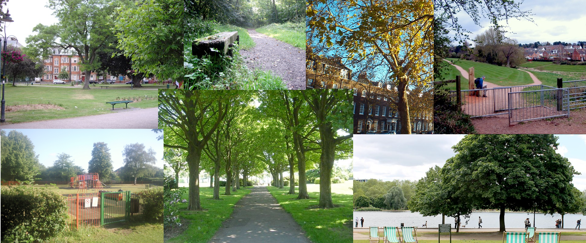
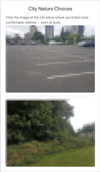

Your opinions will help design parks and wild spaces that work for everyone.
Start Survey Now
Urban greenspaces are vital for wildlife, well-being, and community. But how do we design them to work for everyone? Your input will help researchers and policymakers create greener, safer, and more inclusive cities.

We collect basic demographic details (age, gender, ethnicity, postcode area) only to help us understand whether people from different backgrounds see green spaces differently. This ensures our findings represent the whole community.
We collect no other personal data, and all responses are anonymous.
Click below to start the survey and contribute to real change in your community.
Start Survey NowIs my data safe?
Yes! All responses are anonymous and stored securely. We only use demographics to analyze trends—never to identify individuals.
How will my input be used?
Your answers will inform academic research and UK urban planning policy, helping to create greenspaces that work for everyone.
Who’s behind this?
This project is led by James at Manchester Metropolitan University as part of a PhD study on urban ecology and public perception.